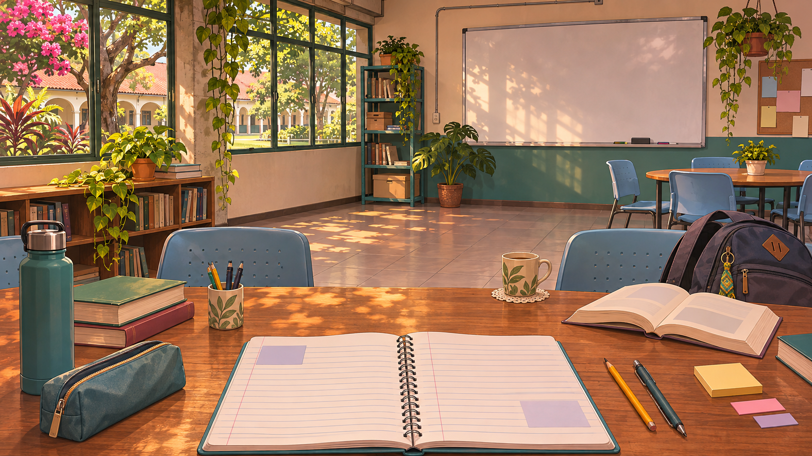
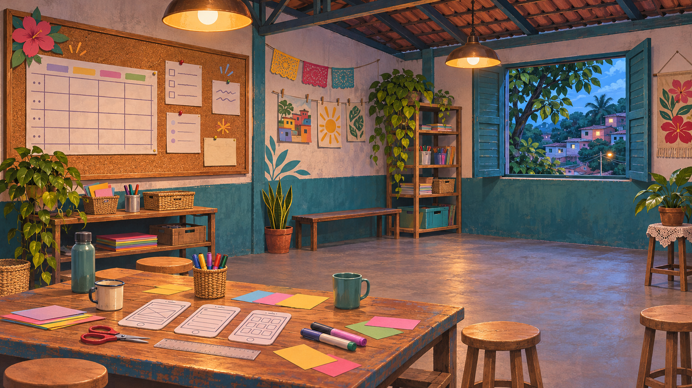

Ir ao conteúdoThe Requirements Whisperer Caderno de evolução · 1.3
Três projetos · uma vida fora do estágio
O que você constrói continua com alguém.
Uma agenda de laboratório, os gastos de Lia e a fila do suporte. Investigue, mude o comportamento do produto e volte para ver o que ficou. Entre os projetos, combine seus próprios horários de estudante.
A mesa abre três casos. Resultados, pendências e montagem da interface continuam no save da partida.
Escolha a ordem no hub
Três pedidos. Três problemas diferentes.
Objetos no escritório e uma lista equivalente abrem os projetos. A pasta guarda o que foi feito e o que ainda precisa de retorno. O encerramento conjunto reúne os resultados; não concede um certificado de aprendizagem.
Universidade · Laboratório
Antes de gravar, é preciso conferir.
Investigue duas confirmações para o mesmo equipamento. Ligue fontes a regras, escolha o pacote e reorganize a sequência de desenvolvimento.
Uma gravação antes da recusa deixa a tentativa indevida na cópia da agenda.
Repetir os casos confere a nova sequência; uma regra fora do pacote continua ausente.
O retorno preserva compromisso, responsável e possibilidade de reparação.
Os retornos são snapshots por projeto, dentro do save. Revisitar um caso preserva o retorno anterior até concluir outra rodada. A nova conclusão substitui somente aquele projeto; salvar e carregar retomam a atividade em andamento.
Uma tela que muda de verdade no jogo
Monte a interface. Depois use o que montou.
No jogo, arrastar ou selecionar e posicionar troca Total, Lançamentos e Ações. A ordem aparece na tela funcional de gastos e fica arquivada junto ao resultado.
Um pequeno demonstrador
Reordene os três módulos com os botões. Use Tab para chegar às ações e Enter ou Espaço para mover. A prévia ao lado acompanha a ordem.
Demonstração documental desta página: não executa o motor, não altera os valores do exemplo e não grava um save. A montagem jogável completa também oferece arrastar e soltar.
Gastos de LiaPrévia local
O trabalho aparece no formato em que será usado
Documentos para consultar. Interfaces para experimentar.
A moldura do jogo continua azul-petróleo. Por dentro, fichas, quadro, agenda, planilha e atendimento usam papel claro, campos e controles ligados aos dados da partida.
Menu · Novo jogo abre a campanha; a demo anterior fica nos Extras.Mochila · abra o notebook sem sair da campanha.Documentos · consulte os dossiês e os registros do caso.Caixa de entrada · convites, demandas e retornos da equipe.Mensagem · conteúdo derivado dos fatos desta partida.Dossiê · compare resultados, layout e pendências.Requisitos · ID, fonte, regra e critério ficam juntos.Kanban · acompanhe o escopo e as dependências da rodada.Agenda · compare equipamento, horário e resultado observado.
Capturas reais do motor, com estados preparados para inspecionar a interface. Clique para ampliar; Esc fecha a imagem.
Como cada documento e interface funciona
REQUISITOS
A fonte fica junto da regra.
A ficha reúne ID, relato ou observação, vínculo e critério do item. Uma hipótese continua identificada; resultados de ensaio mostram o que foi observado.
KANBAN
O escopo precisa caber.
O quadro de planejamento apresenta o pacote e os limites da rodada. Mudar a aparência do cartão não acrescenta capacidade nem implementa uma proteção.
AGENDA
Horários são dados.
Equipamento, reserva anterior, tentativa e resultado aparecem na agenda. A reserva mantida pode ser consultada enquanto você compara os casos.
PLANILHA
Uma linha tem identidade.
Colunas, linhas numeradas, ID, descrição e valor tornam a conferência concreta. Remover, cancelar e desfazer atuam nos registros reais da amostra.
ATENDIMENTO
Duas pessoas veem a mudança.
A fila reúne impacto e prioridade. A bancada compara suporte e solicitante com mensagens, solução publicada e histórico do chamado escolhido.
NOTEBOOK
A consulta continua na atividade.
Mochila, documentos e caixa de entrada simulada reúnem convites, demandas e retornos. As mensagens são derivadas do estado da partida, sem conta ou envio de e-mail externo.
O notebook está integrado à mochila, aos documentos e aos acessos da campanha. As mensagens acompanham o estado da partida: não inventam uma entrega nem encerram uma pendência ao serem lidas. Testes dirigidos passaram; a consolidação da suíte final será registrada na revisão.
A cidade aparece de dia e à noite. Campus e oficina comunitária abrem visitas, pistas e uma agenda de duas noites. Os três projetos continuam acessíveis sem fazer o passeio ou o curso.

Campus · grupo de estudo. O encontro é terça à noite. Para mudar para quinta, converse com a colega antes de reservar o novo horário.

Oficina · curso gratuito. Quinta à noite inclui a viagem até o outro lado da cidade. Um protótipo de papel retoma cancelar, confirmar e desfazer.
Escolher inclui descansar.
Estudo, curso, plantão extra e descanso disputam a disponibilidade real. Um compromisso ocupado não é substituído em silêncio. O curso já realizado permanece no histórico daquela noite.
Replanejar exige conversa.
Combine a revisão do estágio com Sabrina. Sem plantão, ela vai para o horário regular. Se a agenda mudar, o acordo fica sinalizado até uma nova conversa; descanso não é tratado como falha.
Um percurso completo dentro do laboratório
Entre a bancada e o compromisso.
A exploração reúne fontes. O quadro liga essas fontes a regras. O plano vira comportamento no calendário. Uma semana depois, as pessoas lembram do combinado.
Experimente uma relação de causa e efeito
O que entra no plano muda o que acontece.
Esta demonstração documental resume as decisões do laboratório. Ela não altera seus saves e não substitui o calendário jogável.
No jogo, capacidade e dependências restringem o pacote. Aqui, isolamos os efeitos para facilitar a comparação. Não executar um teste não cria um bug.
Desdobramento
14h–15h
Reserva anterior · preservada
14h30
Continuidade de pessoas, lugares e tempo
Uma semana depois, o mundo continua.
Lia participa da investigação dos gastos; Carlos, Júlio, Rodrigo e Sabrina retomam os acordos nos retornos. Compare suas roupas sem perder a identidade de cada pessoa. No suporte, cenário e roupa acompanham a semana chuvosa; o clima não muda as regras do software.
Carlos
Júlio
Lia
Rodrigo
Sabrina
Compare a roupa do primeiro encontro com o retorno de cada pessoa. Os botões funcionam com Tab, Enter e Espaço. Identidade e papel continuam os mesmos; roupa e iluminação acompanham o momento escrito no roteiro.
Vinte e nove novos arquivos de arte nesta 1.3: dezoito fundos e suas variantes, seis sprites de personagens, quatro objetos transparentes e uma moldura de diálogo. Três fundos foram preparados sem os objetos pintados para receber sprites interativos sem duplicação. Fundos, personagens e objetos são arquivos locais; texto, dados e controles são desenhados pelo motor.
Startup · o projeto de gastos ganha um lugar próprio.Suporte · triagem, desenvolvimento e passagem de turno.Suporte na chuva · mesma sala, uma semana depois.Campus · visita opcional e horário do grupo.Oficina · deslocamento, curso e protótipo de papel.Laboratório · cenário da versão anterior preservado.Quarto · preparação e vida de estudante.Notebook · objeto revisado na versão anterior.
Os objetos clicáveis ganham brilho ao passar o mouse ou receber foco do teclado. Rótulos pequenos identificam a ação; a lista equivalente continua disponível. O destaque é imediato, sem animação obrigatória.
Prancheta Planilhas, preparo e horário da oficinaCelular Entrada para o projeto de gastosNotebook Projeto de chamados e cópia localCaderno Laboratório e grupo de estudo
Estas imagens têm transparência real. Esta prévia responde a mouse e foco; clique para ampliar a arte. No jogo, os objetos abrem as fontes e projetos, sem grandes botões opacos cobrindo a cena.
Prévia documental · caixa de diálogo
Sabrina
Traga o que encontrou, o que mudou e o que ainda não consegue prometer.
Arquivo real da moldura · o motor aplica um recorte e conserva os cantos ao redimensionar. O texto é uma camada separada. Ver procedência e integração.Leitura e espaço para a cena
A caixa de diálogo usa carvão #192c32 e texto marfim #f5f0e7. No tamanho normal, a altura é 300, o texto tem tamanho 34, o nome 32 e as margens laterais são 70. A opção de texto maior mantém tamanho 42. A prévia desta página ilustra a paleta. A nova borda transparente usa verde petróleo e cobre; nomes e falas permanecem como texto do motor. As capturas do portfólio registram estados de inspeção e não substituem a verificação completa do fluxo.
O mesmo lugar em outro horário
As cenas também mudam de luz.
Compare os arquivos reais da campanha. Escolha um local e um horário: móveis, objetos e enquadramento continuam reconhecíveis, enquanto luz e exterior acompanham a cena.
Campus · 16h · visita
A visita diurna revela o horário do grupo. Às 20h, a mesma sala recebe o encontro de estudo com iluminação artificial.
Use Tab para alcançar os botões e Enter ou Espaço para escolher. Clique na imagem para ampliar.
No jogo, o relógio acompanha cenas e atividades de cada caso: laboratório às 14h na investigação, 9h na entrega e 15h no retorno; startup às 9h e 14h; suporte às 9h, 14h30 e no retorno chuvoso às 10h10; campus, oficina e cidade às 16h e 20h; quarto às 8h e 20h. A agenda pessoal organiza duas noites. Este comparador documental não avança o tempo nem modifica uma partida.
Capturas reais do motor · clique para ampliar
Dentro do motor.
Capturas reais da campanha 1.3: projetos, montagem da interface e vida de estudante. A galeria de documentos acima complementa estas telas com notebook, mensagens, requisitos, Kanban e agenda. A demonstração de montagem acima é uma prévia documental, separada destas telas do motor.
Hub · escolha um projeto e consulte os retornos.Montagem · arraste ou selecione e posicione os módulos.Gastos · confira lista, total e operações na tela funcional.Chamados · compare o que a equipe e a pessoa recebem.Laboratório · confira quando a tentativa entra na agenda.Agenda · reserve horários e atualize o acordo com a equipe.Campus · descubra o horário e combine uma mudança.Oficina · o curso de quinta inclui o deslocamento.Objeto em foco · imagem separada, brilho e nome discreto.Retorno · uma semana depois, confira o que ficou pendente.
O laboratório da versão anterior continua aqui.
As seis capturas a seguir registram a versão 1.2, preservada na campanha atual.
Explore pelo cenário ou pela lista.Confronte a regra com sua fonte.Escolha o que cabe nesta rodada.Experimente o comportamento do projeto.Volte às pessoas depois da entrega.Reconheça o resultado e as pendências.
Capturas feitas no motor, com alguns estados preparados para inspecionar a interface. As seis telas da versão 1.2 estão identificadas como registros anteriores. As imagens mostram a apresentação; resultados da suíte e limites da avaliação ficam na revisão completa.
Mudanças que você pode conferir no jogo
Da ideia à interação.
Laboratório: exploração, fontes e uma missão opcional
Três destinos acessíveis pelo cenário ou por lista: bancada, conversa com Carlos e mesa da equipe. A missão “A planilha que ninguém aposenta” revela a necessidade de consulta quando a conexão cai e altera a conversa sobre adoção.
Quadro de requisitos e planejamento
Selecione uma evidência e a regra que ela sustenta. Uma ligação inadequada permanece como hipótese revisável. O planejamento compara capacidade, custos e dependências. O quadro usa seleção por clique ou teclado. A nova montagem da interface de gastos também permite arrastar; a ordem escolhida aparece na aplicação funcional.
Calendário, incidente e revisão 2
Experimente sobreposição, reservas adjacentes, preparo insuficiente e equipamentos diferentes. O calendário usa as regras do pacote. Após uma reparação, os resultados anteriores são limpos para exigir nova verificação.
Memória, progresso e desfechos
Responsável, marco de retorno e estado do acordo aparecem na pasta de trabalho. O HUD informa etapa e próxima ação. Os desfechos distinguem rotina confiável, espera com propósito, reparação e pendências sem responsável.
Feedback e acessibilidade
Seleções, estados escritos e resultados do calendário tornam a interação perceptível. Transições de cena respeitam a preferência do motor. Fonte maior, teclado, leitura sem cronômetro e consulta da pasta continuam disponíveis. Uso com leitores de tela e aparelhos físicos ainda precisa de avaliação própria.
Revisão dos pontos da proposta original · estado da entrega 1.3
Ponto
Estado
O que esta entrega permite conferir
Exploração e evidências
Implementado
Fontes consultáveis, mapa e lista equivalente, hipóteses revisáveis e missões opcionais.
Escolhas e consequências
Implementado
Plano altera o calendário; correção muda os gastos; publicação e repasse alteram o atendimento e o retorno.
Desenvolver e testar
Implementado
Sequência de gravação, cancelar/confirmar/desfazer, atualização conjunta de estado e solução. Versão anterior e nova têm comportamentos comparáveis.
Construir a interface
Implementado
Três módulos reordenáveis no jogo por arrastar ou seleção. Layout aplicado aos gastos e arquivado no resultado.
Equipe, produto e memória
Implementado
Revisão com Júlio, prioridades negociadas, responsáveis e retornos. Pendência permanece visível, inclusive no encerramento conjunto.
Três casos próprios
Implementado
Laboratório, gastos e chamados usam fontes, riscos e operações diferentes.
Vida de estudante
Implementado
Dois locais opcionais, horário de curso, deslocamento, estudo, descanso e acordo de disponibilidade com Sabrina.
Arte e passagem de tempo
Implementado
Vinte e nove novos arquivos nesta 1.3: dezoito fundos e variantes, seis sprites, quatro objetos e uma moldura de diálogo. As cenas usam os horários narrados; duração e ritmo continuam sem medição humana.
Horários e mundo
Recorte implementado
Relógio acompanha as cenas de cada caso e os horários das visitas. A organização pessoal tem duas noites; não há calendário livre nem simulação contínua da cidade.
Feedback e acessibilidade
Recursos presentes
Texto além da cor, controles por teclado, brilho dos objetos no mouse/foco, caixa de diálogo com maior contraste e alternativa ao arrastar. Leitores de tela e dispositivos físicos ainda exigem avaliação.
Documentos e mensagens
Integrado
Mochila e notebook com documentos e caixa de entrada simulada, derivados dos fatos da partida. Testes dirigidos do notebook passaram; consolidação da suíte final ainda pendente.
Duração e ritmo
Não medidos
Metas de minutos são hipóteses. Cronometrar atos e observar pausas em sessões com participantes.
Diversão e vontade de continuar
Não medidas
Observar curiosidade, agência, cansaço e continuidade espontânea. Testes técnicos não respondem a isso.
Aprendizagem e transferência
Não medidas
Apresentar um problema novo e avaliar evidência, regra, teste e limitação com revisão humana.
A revisão técnica verifica regras e jornadas. Ela não substitui playtest humano e não comprova duração, diversão ou domínio profissional. O plano de sessões continua pendente de execução com participantes.
Implementado nesta versão
Hub com três projetos e resultados separados no save.
Desenvolvimento, revisão, uso e retorno em cada caso.
Montagem funcional de interface por arrastar ou selecionar.
Fichas, Kanban, agenda, planilha e central de atendimento em superfícies claras.
Campus, oficina, curso e acordos de agenda opcionais.
Vinte e nove artes novas, incluindo objetos, variantes de horário, roupas de retorno e moldura de diálogo.
Este portfólio local, sem dependências de rede.
Ainda precisa de pessoas
Medir duração e interesse por capítulo.
Observar agência percebida e vontade de continuar.
Avaliar transferência para um problema novo.
Validar acessibilidade com usuários e dispositivos.
Observar os três casos e a vida de estudante em uma partida completa.